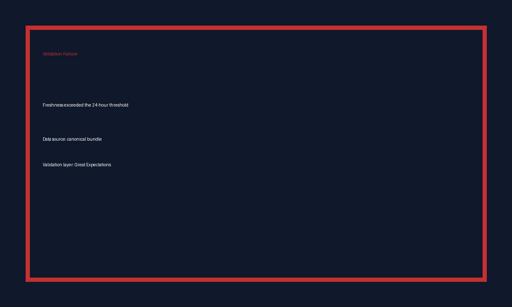
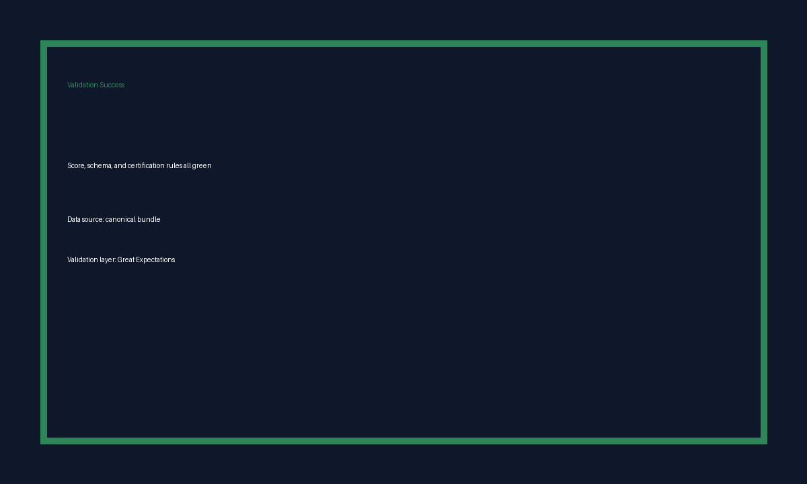
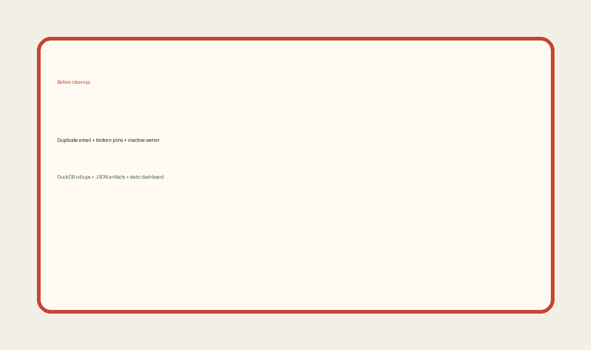

Fetching validation data...
- Waiting for the latest release decision.
Recruiter-ready QA demo
Live snapshot of the automated gating run: pytest layers, Great Expectations checkpoints, and structured release exports. Every workflow refresh pushes a clickable page for the hiring team to inspect.
Validation coverage
Rules evaluated
—
Failures
—
Generated
—
Project overview
CertGate combines schema and business-rule automation to guard releases for the candidate, examination, and certification feeds. Pytest layers exercise every helper and regression scenario, while Great Expectations keeps data docs and checkpoints live for recruiters.
Ensure required columns, dtypes, and unique identifiers before a batch ever lands in production.
Candidate joins, pass/fail status mappings, and certification uniqueness guard the business logic.
Metadata and timestamps verify that data arrives within the 24-hour window or flags a warning.
Great Expectations data docs
Click through the GX site to see every expectation suite and validation result that underpins this demo.
Raw artifacts
Validation highlights

Failed validation captures the critical freshness lag that currently blocks release.

The passing capture shows clean schema, scoring, and pass/fail business logic.

GIF: bad dataset → blocked release → corrected bundle → ready for release.
Defect summary
| Rule ID | Severity | Description | Root cause | Remediation |
|---|---|---|---|---|
| Loading defects... | ||||